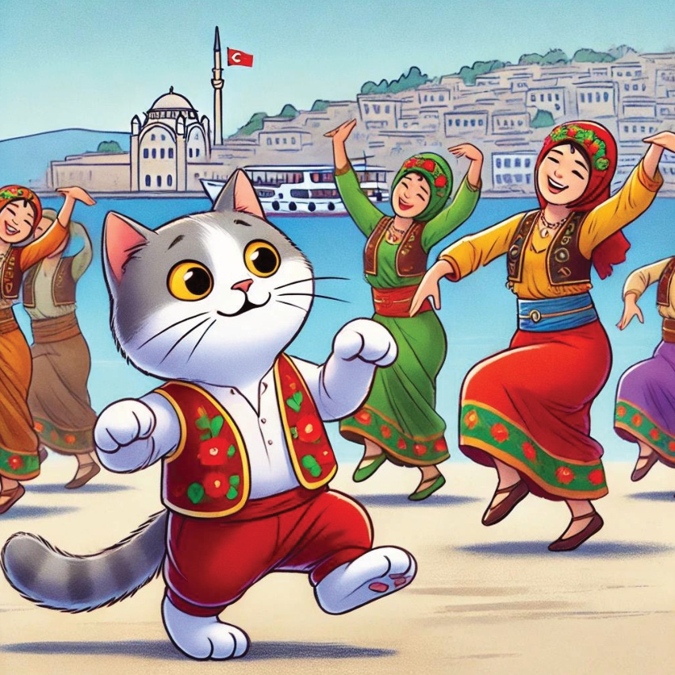
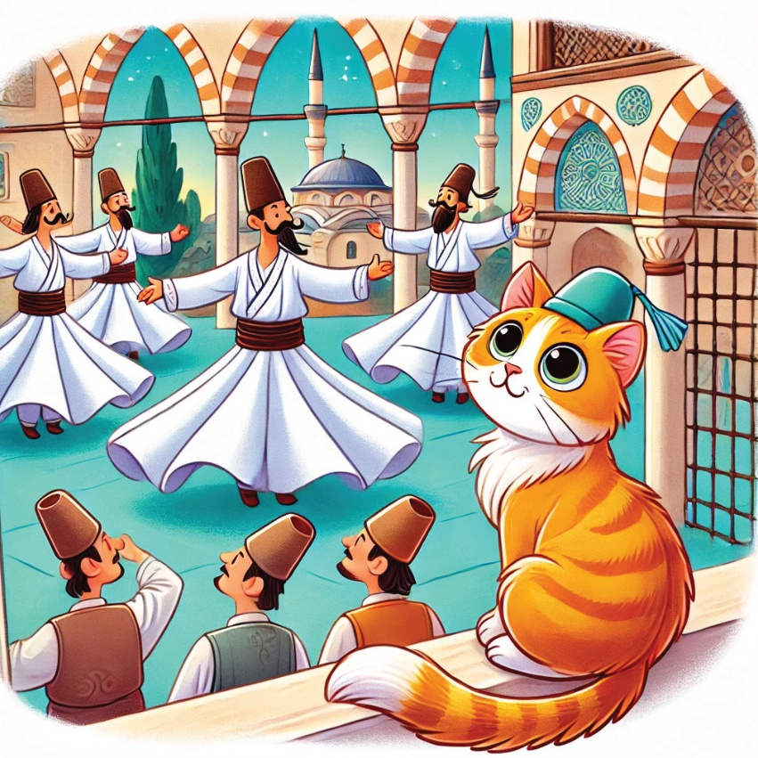

1

2

3
Bir zamanlar Karamel adında meraklı küçük bir kedi vardı ve müzik yapmayı ve dans etmeyi çok severdi. Bir güneşli gün, Karamel Türkiye'nin farklı bölgelerine onu taşıyabilen sihirli bir tefsi makinesi buldu. Keşiften heyecanlanan Karamel, Türkiye'nin zengin müzik geleneklerini ve danslarını keşfetmek için müzikal bir yolculuğa çıkmaya karar verdi.
4
5
Marmara -
İstanbul'da Roman Müziği
Karamel'in ilk durağı İstanbul'du,
orada canlı Roman müziğinin sesleriyle karşılandı.
Müzisyenlerin canlı melodilerini çalarak izlerken hayranlıkla doldu ve ritme kapılarak dans etmekten kendini alamadı.
6
7
Ege -
İzmir'de Zeybek Dansı
Karamel daha sonra İzmir'e seyahat etti ve güçlü ve zarif Zeybek dansını izledi. Dansçılar o kadar grazlı ve güçlü hareket ediyorlardı ki Karamel kendini bu hareketleri denemeye teşvik edilmiş hissetti.
8

9
Akdeniz -
Antalya'da Yörük Müziği
Antalya'da Karamel,
Yörük müziğinin canlı melodilerini deneyimledi.
Yörüklerin hareketli melodileri ve renkli dansları,
Karamel'in kalbini sevinçle çarptırdı.
10
11
Merkez Anadolu -
Konya'da Dönen Mevleviler
Karamel Konya'yı ziyaret etti,
orada mistik Dönen Mevlevilerin ruhani danslarını izledi.
Mevlevilerin zarif dönüşü Karameli büyülüyor
ve huzurla dolduruyordu.
12

13
Karadeniz -
Trabzon'da Horon Dansı
Trabzon'da Karamel, enerjik Horon dansına katıldı.
Karadeniz bölgesinin hızlı tempolu hareketleri ve canlı müziği, Karamel'in patilerinin heyecanla hareket etmesini sağladı.
14
15
Doğu Anadolu -
Erzurum'da Kemençe Müziği
Karamel, onu Erzurum'a götüren ve burada Kemençe'nin hüzünlü melodilerini dinlemesine neden olan bir yolculuğa çıktı. Ruhani müzik, Karamel'in kalbine dokundu ve bölgenin derin kültürel köklerini takdir etmesini sağladı.
16
17
Güneydoğu Anadolu -
Diyarbakır'da Halay Dansı
Sonunda Karamel Diyarbakır'a vardı ve ritmik halay dansına katıldı.
Dansçıların birlik ve neşesi Karamel'i büyük, mutlu bir ailenin parçası gibi hissettirdi.
18
19
Kalbi melodilerle dolu ve patileri dans etmekten yorgun olan Karamel, Türkiye'nin gerçek güzelliğinin zengin müzik gelenekleri ve danslarında yattığını fark etti. Eve döndü, yaşadığı harika müzik ve dansları hayallerinde kurarak.
20
21
22